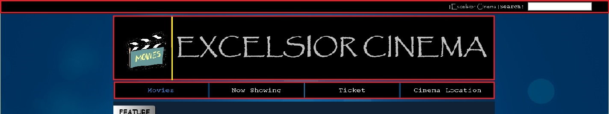
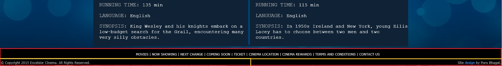
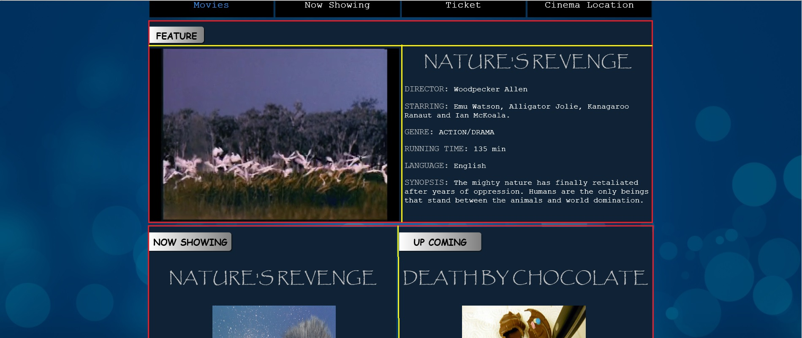
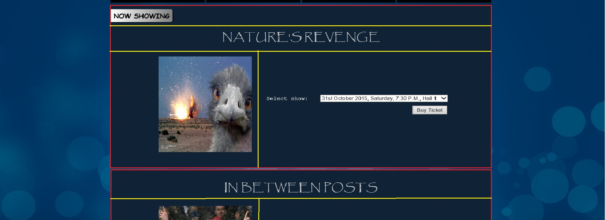
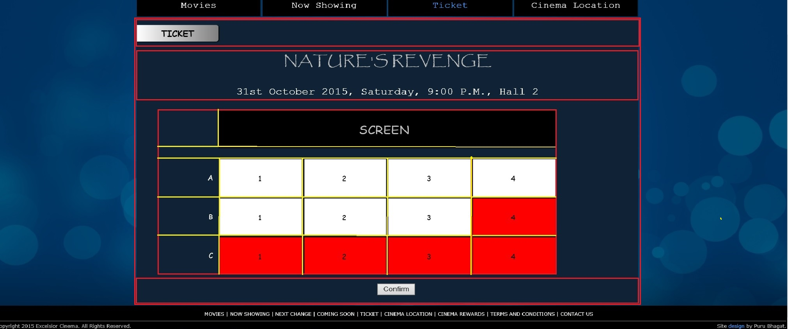
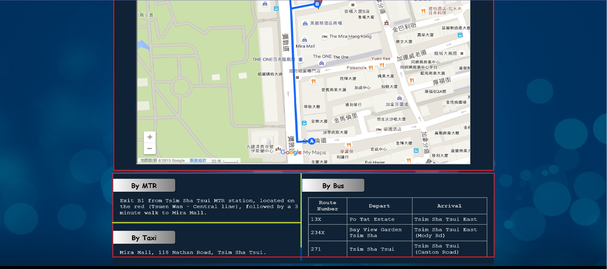

Overall Layout and Theme Design
 The basic theme of the website involves four colors: white, silver, blue and black. I chose these colors because the contrast between white & silver and the darker blue & black makes it easier to read text and distinguish features. The background image is also blue due to this reason.
The common layout among the different pages includes the search bar, the banner (logo + name), the navigation menu and the footer. All the individual page content appears on blocks on a transluscent layer. This way the varying background colors do not interfere with the content but at the same time give a nice appearance.
In the images shown here, the red outline shows blocks and the yellow outlines show further sub-divison of blocks. I have done this using various tags such as header, footer, nav, div and span throughout the website. I made use of lists for the navigation menu in the header and the sitemap in the footer.
The common style between the html pages has been separated into an external style sheet whereas the page specific style is embedded. I used basic, contextual and advanced selectors to keep style simple and less cluttered. I have also used CSS3 properties to make the banner image rotate 360 degrees on hovering and focus selector to highlight search query input. Other notable CSS properties used were float, padding, margin, position, box-shadow, box-sizing, display, overflow, etc.
Page Design
Here, I chose to have one block for a film being featured along with a trailer (for which I used the video tag). Below the feature block, I structured two blocks side-by-side for Now Showing and Upcoming movies respectively with the help of float property. Clicking the Now Showing movie titles opens their respective blocks on the Now Showing web page. I used the z-index CSS property to ensure that the video block appeared above its description block and its controls were accessible. Other notable CSS properties used here are margin, padding, background: linear-gradient(), border-radius, etc.
The content on this web page is divided into three main blocks, one for each now showing movie. The blocks are further sub divided into blocks for alignment and input. Notable HTML tages used here include form, select and option with the help of which the user can choose his preferred movie screening. Notable CSS properties used here are float, margin, padding and position. On clicking 'Buy Ticket', the browser links to the Ticket page.
There is only one main section. Here, users select the seats they want and confirm their booking of the movie screening. I have used multiple blocks with the help of the div tag to create the cinema layout. The red seats are already booked, whereas the white ones are vacant. They turn green on hovering and are clickable. Notable CSS features used here are float, position, text-align, margin and padding.
Again, the content is divided into two main blocks. One contains the embedded custom Google Map and the other contains transport information. Notable html tags used here are iframe (embedded custom Google Map) and table (bus transport information). Notable CSS properties used are float, margin, padding and border.
JavaScript
I've made the use of obtrusive and unobtrusive JavaScript in this website, depending on the number of elements that required event handlers changing.
Obtrusive:
- In Movies page, the onended event hander of the video tag to call the switchVideo() function when it ends and the onclick event handler of the mute img tag.
- In Tickets page, the Submit button's onclick handler is set to call the submitForm() function.
Unobtrusive:
Unobtrusive Javascript was used in all cases where multiple elements had to be selected.
- Eg.: Changing the onclick handler of all Movie titles on the Movies page.
- Populate the Forms present on the Now Showing page by using DOM techniques to .
- Set onclick handlers for all div table-cells on the Tickets Page.
Acknowledgement
http://www.cssfontstack.com/
http://www.w3schools.com/
http:/www.images.google.com/